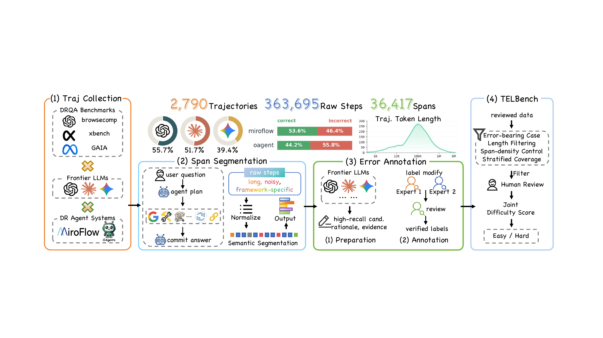
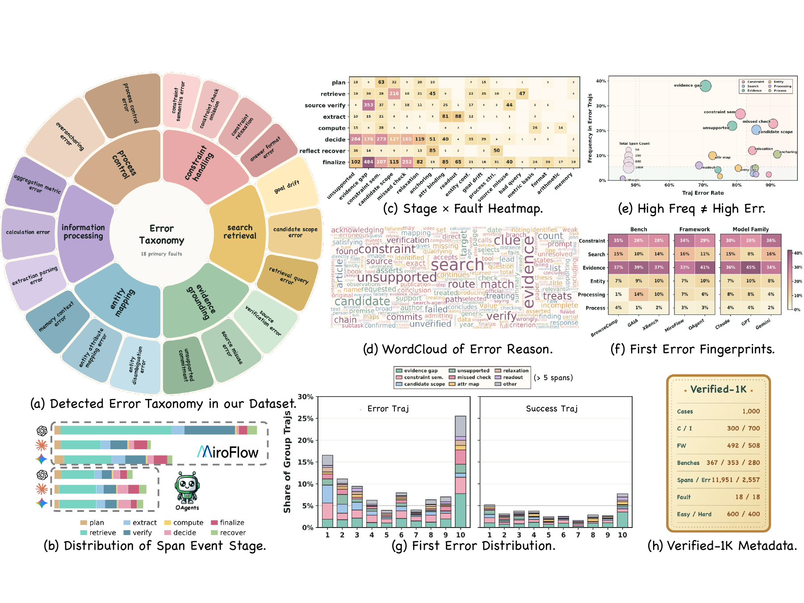
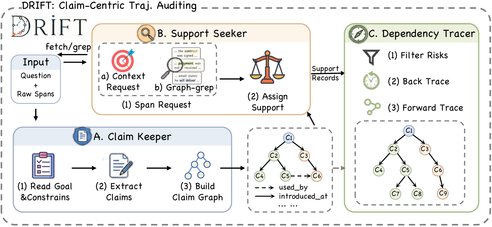
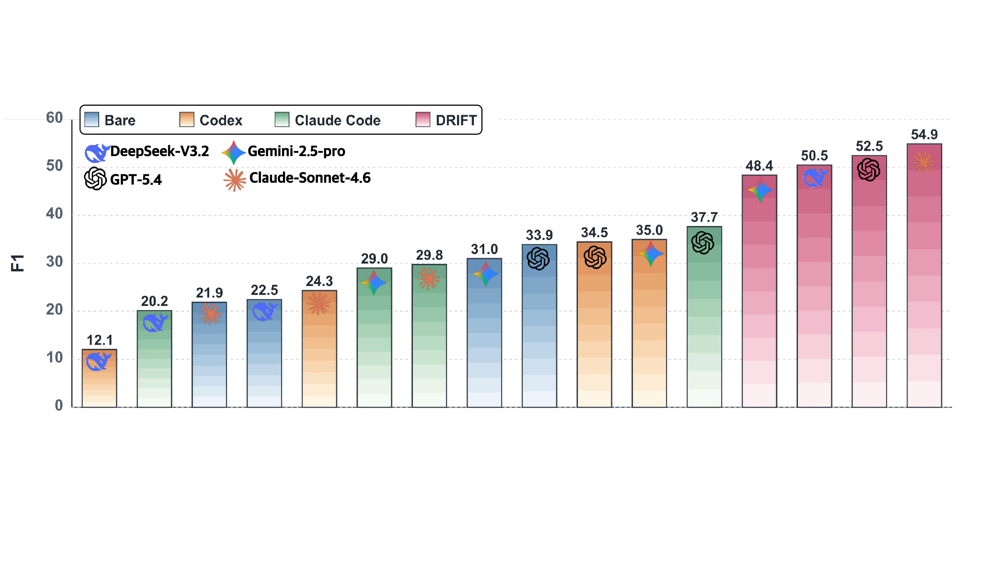
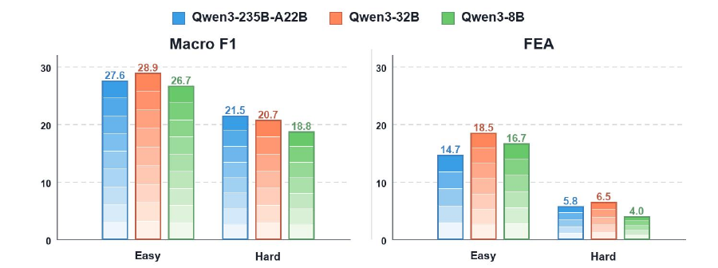
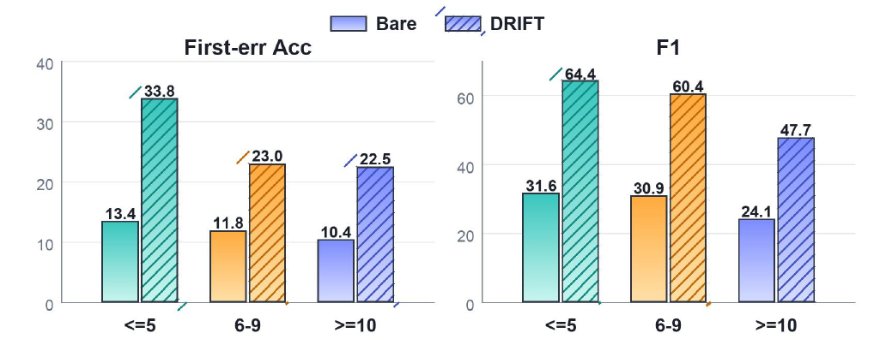
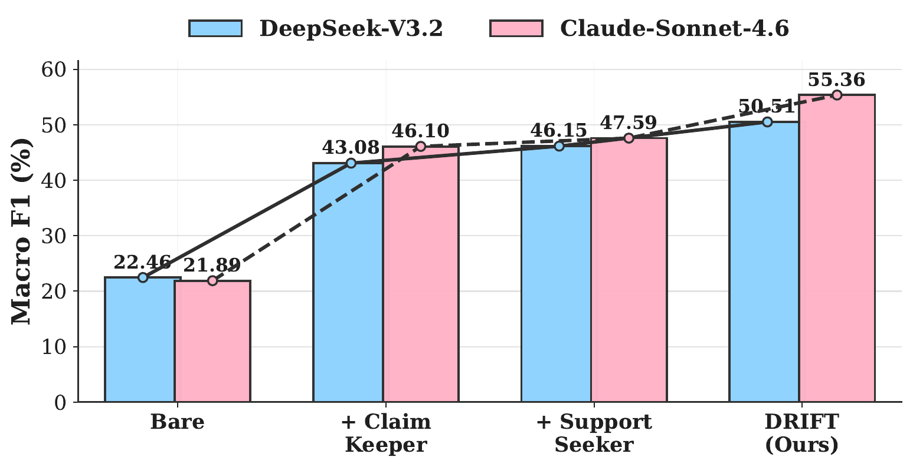
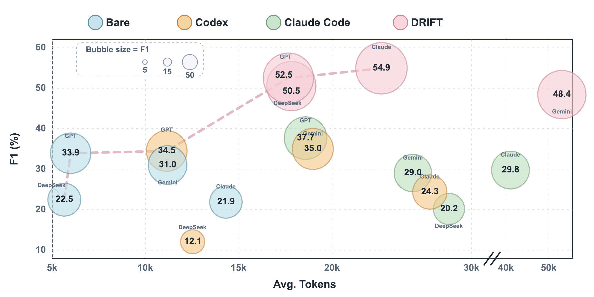
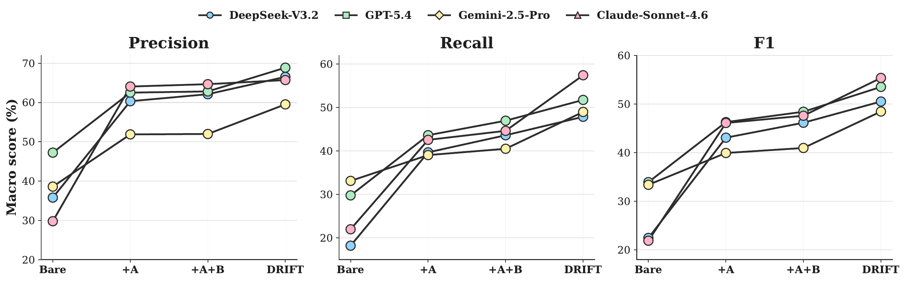

Claim Keeper
Builds a compact ledger of decision-critical claims, including where each claim appears, where it becomes consequential, and which later spans use it.
Span-level error localization for deep-research agents
DRIFT audits long agent trajectories by tracking what the agent comes to believe, whether those claims are supported, and where unsupported commitments become harmful error spans.
NJU-LINK Team, Nanjing University · JIUTIAN Research · OPPO AI Agent Team
Deep-research agents solve tasks through long trajectories of search, tool use, evidence inspection, and answer synthesis. Final-answer evaluation shows whether an agent succeeds, but not which parts of the trajectory make the answer unreliable. We study span-level error localization for deep-research agents, build TELBench from 1,000 expert-verified trajectories, and propose DRIFT, a claim-centric auditing framework that marks spans where unsupported or conflicting claims affect the answer path.
TELBench asks models to identify harmful error spans from ordered semantic spans, not from final answers alone. The benchmark is built from real deep-research agent runs and preserves benign exploration, failed searches, tentative hypotheses, and harmless noise.

TELBench includes mechanism labels for analysis only. They reveal recurring failure families, stage-dependent error patterns, and differences across benchmarks, agent frameworks, and model families. These labels are never provided to evaluation models.

A failed trajectory is rarely a single bad span. Agents search, compare candidates, revise hypotheses, and later reuse earlier claims as if they were established facts. DRIFT therefore diagnoses errors by auditing claims and their dependencies, rather than asking a model to classify every span independently.
Builds a compact ledger of decision-critical claims, including where each claim appears, where it becomes consequential, and which later spans use it.
Checks whether each consequential claim is directly supported, weakly supported, missing support, or contradicted by raw trajectory evidence.
Locates spans where risky claims become harmful commitments and later spans that reuse, amplify, or finalize the same unsupported claim.
DRIFT keeps the input clean: every module receives only the task question and ordered raw span text, with no gold labels, judge results, manual notes, span types, or generated summaries.

On TELBench, DRIFT consistently improves overall macro-F1 over bare full-context prompting. The gains hold across GPT-5.4, DeepSeek-V3.2, Claude-Sonnet-4.6, and Gemini-2.5-Pro, showing that structured claim-centric auditing provides useful signal beyond stronger base models alone.






@misc{wang2026deepresearchagentswrongspanlevel,
title={Where Do Deep-Research Agents Go Wrong? Span-Level Error Localization in Agent Trajectories},
author={Jiaming Wang and Ziteng Feng and Jiangtao Wu and Ruihao Li and Qianqian Xie and Yuxiang Ren and He Zhu and Xueming Han and Fanyu Meng and Junlan Feng and Jiaheng Liu},
year={2026},
eprint={2606.02060},
archivePrefix={arXiv},
primaryClass={cs.AI},
url={https://arxiv.org/abs/2606.02060},
}